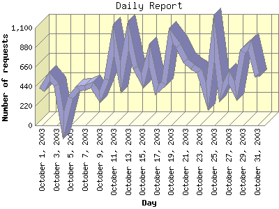

Report generated by Analog 5.91beta1 and Report Magic 2.21
|
Web Server Statistics for "Harish Narayanan (hnarayan) - October 2003" Report generated by Analog 5.91beta1 and Report Magic 2.21 |
The Daily Report identifies the activity for each day within the reporting period. Remember that one page hit can result in several server requests as the images for each page are loaded.

| Day | Number of requests | Number of bytes transferred | Percentage of the bytes | Percentage of the requests | |
|---|---|---|---|---|---|
| 1. | October 1, 2003 | 400 | 4.028 MB | 1.50% | 2.22% |
| 2. | October 2, 2003 | 553 | 11.404 MB | 4.26% | 3.07% |
| 3. | October 3, 2003 | 459 | 8.280 MB | 3.09% | 2.55% |
| 4. | October 4, 2003 | 0 | 0.000 B | 0.00% | 0.00% |
| 5. | October 5, 2003 | 312 | 3.701 MB | 1.38% | 1.73% |
| 6. | October 6, 2003 | 417 | 8.624 MB | 3.22% | 2.32% |
| 7. | October 7, 2003 | 425 | 9.375 MB | 3.50% | 2.36% |
| 8. | October 8, 2003 | 452 | 4.884 MB | 1.82% | 2.51% |
| 9. | October 9, 2003 | 320 | 9.295 MB | 3.47% | 1.78% |
| 10. | October 10, 2003 | 518 | 5.367 MB | 2.00% | 2.88% |
| 11. | October 11, 2003 | 967 | 16.751 MB | 6.25% | 5.37% |
| 12. | October 12, 2003 | 544 | 7.386 MB | 2.76% | 3.02% |
| 13. | October 13, 2003 | 1,011 | 18.553 MB | 6.92% | 5.62% |
| 14. | October 14, 2003 | 649 | 11.924 MB | 4.45% | 3.61% |
| 15. | October 15, 2003 | 506 | 7.530 MB | 2.81% | 2.81% |
| 16. | October 16, 2003 | 791 | 11.354 MB | 4.24% | 4.39% |
| 17. | October 17, 2003 | 399 | 11.464 MB | 4.28% | 2.22% |
| 18. | October 18, 2003 | 472 | 11.594 MB | 4.33% | 2.62% |
| 19. | October 19, 2003 | 1,011 | 4.413 MB | 1.65% | 5.62% |
| 20. | October 20, 2003 | 899 | 10.125 MB | 3.78% | 5.00% |
| 21. | October 21, 2003 | 730 | 6.696 MB | 2.50% | 4.06% |
| 22. | October 22, 2003 | 661 | 8.895 MB | 3.32% | 3.67% |
| 23. | October 23, 2003 | 611 | 12.212 MB | 4.56% | 3.40% |
| 24. | October 24, 2003 | 319 | 5.618 MB | 2.10% | 1.77% |
| 25. | October 25, 2003 | 991 | 9.655 MB | 3.60% | 5.51% |
| 26. | October 26, 2003 | 366 | 5.370 MB | 2.00% | 2.03% |
| 27. | October 27, 2003 | 549 | 9.351 MB | 3.49% | 3.05% |
| 28. | October 28, 2003 | 386 | 5.284 MB | 1.97% | 2.15% |
| 29. | October 29, 2003 | 830 | 8.062 MB | 3.01% | 4.61% |
| 30. | October 30, 2003 | 901 | 12.242 MB | 4.57% | 5.01% |
| 31. | October 31, 2003 | 548 | 8.505 MB | 3.17% | 3.04% |
Most active day October 29, 2003 : 205 pages sent. 1,011 requests handled. 19,454,101.00 served.
Daily average: 599 requests handled. 8.931 MB served.
This report was generated on January 18, 2004 18:27.
Report time frame October 1, 2003 00:41 to October 31, 2003 23:51.
| Web statistics report produced by: | |
 Analog 5.91beta1 Analog 5.91beta1 |  Report Magic 2.21 Report Magic 2.21 |